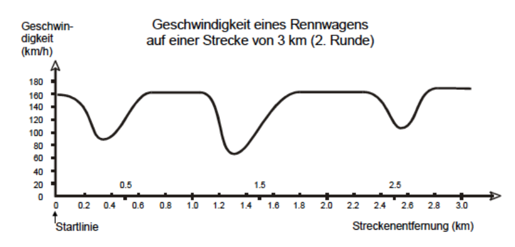
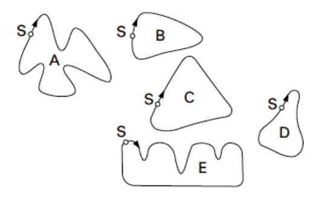

Dieser Graph zeigt, wie die Geschwindigkeit eines Rennwagens während seiner zweiten Runde auf einer drei Kilometer langen, ebenen Rennstrecke variiert.

a) Wie gross ist die ungefähre Entfernung von der Startlinie bis zum Beginn des längsten geraden Abschnitts der Rennstrecke?
Diese Aufgabe wird im Unterricht besprochen.
b) Wo wurde während der zweiten Runde die geringste Geschwindigkeit aufgezeichnet?
Diese Aufgabe wird im Unterricht besprochen.
c) Was können Sie über die Geschwindigkeit des Wagens zwischen den Markierungen von $2.6\text{ km}$ und $2.8\text{ km}$ sagen?
Diese Aufgabe wird im Unterricht besprochen.
d) Hier sehen Sie Abbildungen von fünf Rennstrecken: Auf welcher dieser Rennstrecken fuhr der Wagen? Begründen Sie.

Diese Aufgabe wird im Unterricht besprochen.
e) Erstellen Sie jeweils einen Geschwindigkeitsgraphen zu den übrigen Abbildungen.